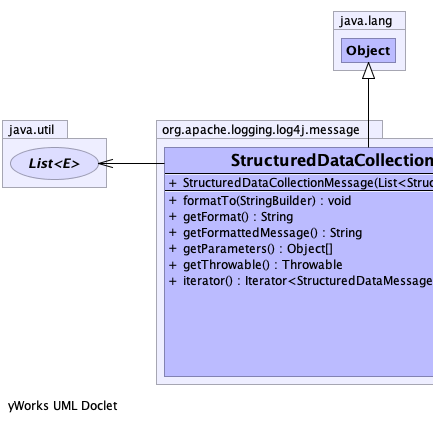
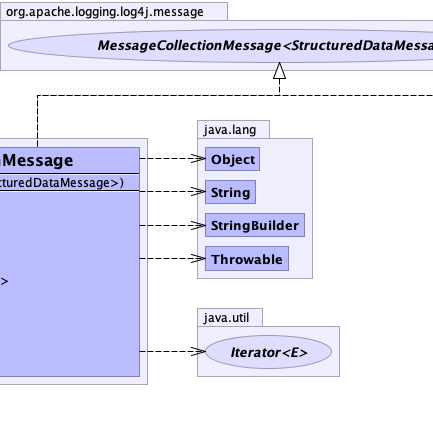
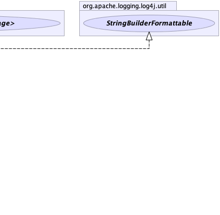

public class StructuredDataCollectionMessage extends java.lang.Object implements StringBuilderFormattable, MessageCollectionMessage<StructuredDataMessage>
|  |  |  |
| Constructor and Description |
|---|
StructuredDataCollectionMessage(java.util.List<StructuredDataMessage> messages) |
| Modifier and Type | Method and Description |
|---|---|
void |
formatTo(java.lang.StringBuilder buffer)
Writes a text representation of this object into the specified
StringBuilder, ideally without allocating
temporary objects. |
java.lang.String |
getFormat()
Gets the format portion of the Message.
|
java.lang.String |
getFormattedMessage()
Gets the Message formatted as a String.
|
java.lang.Object[] |
getParameters()
Gets parameter values, if any.
|
java.lang.Throwable |
getThrowable()
Gets the throwable, if any.
|
java.util.Iterator<StructuredDataMessage> |
iterator() |
public StructuredDataCollectionMessage(java.util.List<StructuredDataMessage> messages)
public java.util.Iterator<StructuredDataMessage> iterator()
iterator in interface java.lang.Iterable<StructuredDataMessage>public java.lang.String getFormattedMessage()
Message
When configured to log asynchronously, this method is called before the Message is queued, unless this
message implements ReusableMessage or is annotated with AsynchronouslyFormattable.
This gives the Message implementation class a chance to create a formatted message String with the current value
of any mutable objects.
The intention is that the Message implementation caches this formatted message and returns it on subsequent
calls. (See LOG4J2-763.)
When logging synchronously, this method will not be called for Messages that implement the
StringBuilderFormattable interface: instead, the
formatTo(StringBuilder) method will be called so the
Message can format its contents without creating intermediate String objects.
getFormattedMessage in interface Messagepublic java.lang.String getFormat()
MessagegetFormat in interface Messagepublic void formatTo(java.lang.StringBuilder buffer)
StringBuilderFormattableStringBuilder, ideally without allocating
temporary objects.formatTo in interface StringBuilderFormattablebuffer - the StringBuilder to write intopublic java.lang.Object[] getParameters()
MessagegetParameters in interface Messagepublic java.lang.Throwable getThrowable()
MessagegetThrowable in interface Message